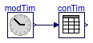
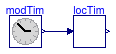
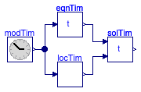

Collection of models that illustrate model use and test models
This package contains examples for the use of models that can be found in Buildings.BoundaryConditions.WeatherData.BaseClasses.
Extends from Modelica.Icons.ExamplesPackage (Icon for packages containing runnable examples).
| Name | Description |
|---|---|
| Test model for ceiling height check | |
| Test model for pressure check | |
| Test model for CheckRadiation | |
| Test model for CheckRelativeHumidity | |
| Test model for checking sky cover | |
| Test model for CheckTemperature | |
| Test model for wind direction check | |
| Test model for wind speed check | |
| Test model for ConvertRadiation | |
| Test model for converting relative humidity and checking its validity | |
| Test model for converting time | |
| Test model for equation of time | |
| Test model to get the absolute path of a URI | |
| Test model to get header element | |
| Test model for calculate local civil time | |
| Test model for solar time |
 Buildings.BoundaryConditions.WeatherData.BaseClasses.Examples.CheckCeilingHeight
Buildings.BoundaryConditions.WeatherData.BaseClasses.Examples.CheckCeilingHeight
Test model for ceiling height check

This example tests the model that constrains the ceiling height.
Extends from Modelica.Icons.Example (Icon for runnable examples).
Buildings.BoundaryConditions.WeatherData.BaseClasses.Examples.CheckPressure
Test model for pressure check

This example tests the model that asserts that the pressure is within acceptable bounds.
Extends from Modelica.Icons.Example (Icon for runnable examples).
Buildings.BoundaryConditions.WeatherData.BaseClasses.Examples.CheckRadiation
Test model for CheckRadiation

This example tests the model that constrains the radiation.
Extends from Buildings.BoundaryConditions.WeatherData.BaseClasses.Examples.ConvertRadiation (Test model for ConvertRadiation).
Buildings.BoundaryConditions.WeatherData.BaseClasses.Examples.CheckRelativeHumidity
Test model for CheckRelativeHumidity

This example tests the model that constrains the relative humidity.
Extends from Buildings.BoundaryConditions.WeatherData.BaseClasses.Examples.ConvertRelativeHumidity (Test model for converting relative humidity and checking its validity).
Buildings.BoundaryConditions.WeatherData.BaseClasses.Examples.CheckSkyCover
Test model for checking sky cover

This example tests the model that constrains the sky cover.
Extends from Modelica.Icons.Example (Icon for runnable examples).
Buildings.BoundaryConditions.WeatherData.BaseClasses.Examples.CheckTemperature
Test model for CheckTemperature

This example tests the model that checks the temperature.
Extends from Modelica.Icons.Example (Icon for runnable examples).
Buildings.BoundaryConditions.WeatherData.BaseClasses.Examples.CheckWindDirection
Test model for wind direction check

This example tests the model that constrains the wind direction.
Extends from Modelica.Icons.Example (Icon for runnable examples).
Buildings.BoundaryConditions.WeatherData.BaseClasses.Examples.CheckWindSpeed
Test model for wind speed check

This example tests the model that constrains the wind speed.
Extends from Modelica.Icons.Example (Icon for runnable examples).
Buildings.BoundaryConditions.WeatherData.BaseClasses.Examples.ConvertRadiation
Test model for ConvertRadiation

This example tests the model that converts radiation.
Extends from Modelica.Icons.Example (Icon for runnable examples).
Buildings.BoundaryConditions.WeatherData.BaseClasses.Examples.ConvertRelativeHumidity
Test model for converting relative humidity and checking its validity

This example tests the model that converts relative humidity.
Extends from Modelica.Icons.Example (Icon for runnable examples).
Buildings.BoundaryConditions.WeatherData.BaseClasses.Examples.ConvertTime
Test model for converting time

This example tests the model that converts time.
Extends from Modelica.Icons.Example (Icon for runnable examples).
Buildings.BoundaryConditions.WeatherData.BaseClasses.Examples.EquationOfTime
Test model for equation of time

This example tests the model that computes the equation of time.
Extends from Modelica.Icons.Example (Icon for runnable examples).
Buildings.BoundaryConditions.WeatherData.BaseClasses.Examples.GetAbsolutePathTest model to get the absolute path of a URI
This model tests the function that gets the absolute path of a URI.
Extends from Modelica.Icons.Example (Icon for runnable examples).
| Type | Name | Default | Description |
|---|---|---|---|
| String | f[:] | {"file://legal.html","modeli... | Name of a file that exists |
| String | fAbs[:] | Buildings.BoundaryConditions... | Absolute path of f |
Buildings.BoundaryConditions.WeatherData.BaseClasses.Examples.GetHeaderElementTest model to get header element
This example tests getting the header of the TMY3 weather data file.
Extends from Modelica.Icons.Example (Icon for runnable examples).
| Type | Name | Default | Description |
|---|---|---|---|
| Angle | longitude | Longitude [rad] | |
| Angle | latitude | Latitude [rad] | |
| Time | timeZone | Time zone [s] |
Buildings.BoundaryConditions.WeatherData.BaseClasses.Examples.LocalCivilTime
Test model for calculate local civil time

This example tests the model that computes the local civil time.
Extends from Modelica.Icons.Example (Icon for runnable examples).
Buildings.BoundaryConditions.WeatherData.BaseClasses.Examples.SolarTime
Test model for solar time

This example tests the model that computes the solar time.
Extends from Modelica.Icons.Example (Icon for runnable examples).